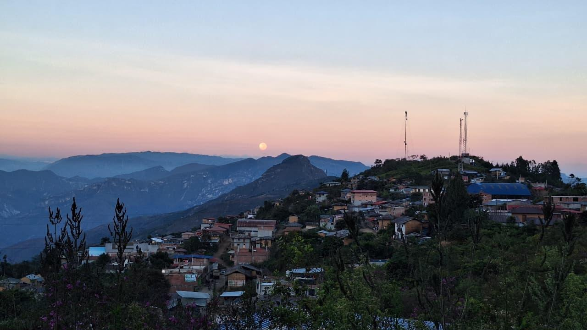
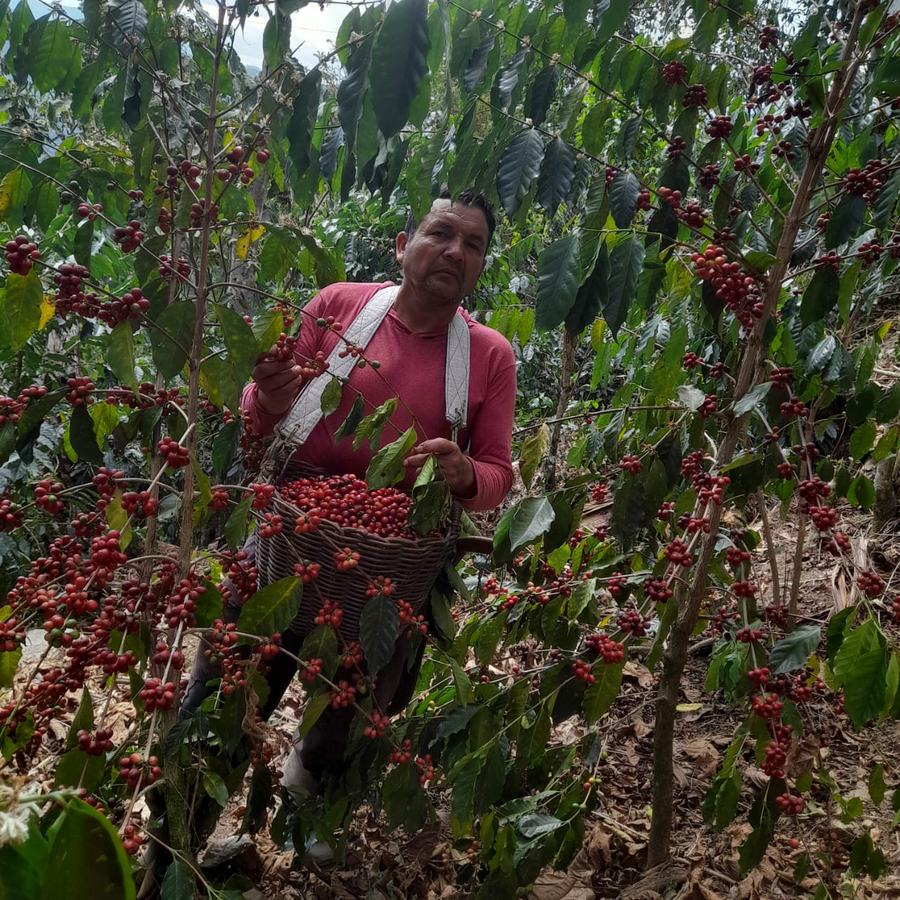
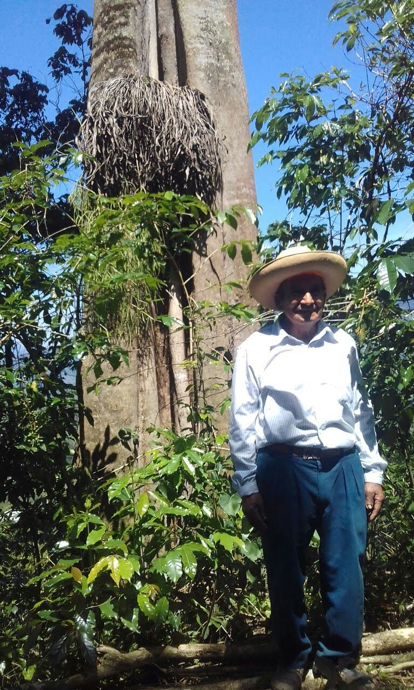

Cada planta crece bajo las mejores prácticas cafetaleras y cada cosecha se selecciona con dedicación, para una taza limpia, aromática y de gran cuerpo.
Mueve el cursor sobre la bolsa.
Dulzor profundo y envolvente.
Notas suaves y redondas.
Un toque vivo y fresco.
Entre las montañas de Amazonas, a 1800 m.s.n.m., crece el café que cuida nuestra familia.


En Villa Cocochó, región Amazonas, honramos la tierra y el trabajo de cada generación. La caficultura es para nosotros una forma de vida y un compromiso con el desarrollo de nuestra comunidad.
Sembramos las primeras plantas en Villa Cocochó.
Una tradición familiar que honra la tierra.
De nuestras chacras a su mesa, taza a taza.
Detrás de cada bolsa hay manos que conocen cada planta y una tradición que pasa de padres a hijos.

Con su trabajo y su respeto por la tierra comenzó el camino que hoy llega a tu taza.
Cosecha a mano y cuida cada planta con la misma dedicación, llevando la tradición familiar hacia adelante.
Tostamos con cuidado hasta un punto medio que resalta el chocolate, la miel y el toque cítrico de nuestro origen.
Por cada taza de 240 ml, usa 10 g de café molido. Temperatura de agua ideal: 90–96 °C.
Método sugerido: Filtro. Almacena el café en un lugar fresco y seco.
Elige presentación y cantidad. Te abrimos WhatsApp con el mensaje listo.
Producido y envasado por AMMA COFFEE SAC · RUC 21613440977
Avenida Pizarro N°500, Cocochó, Camporredondo, Luya, Amazonas, Perú.
amma.coffee01@gmail.com